BYUCTF 2023 - VMception [Forensics] Write-up
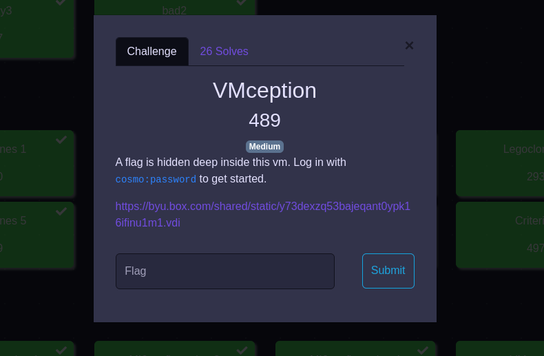
| Difficulty | Medium |
|---|---|
| Category | Forensics |
Let’s begin by quickly downloading the file from the link given in the challenge description. It’s 3.2 GB so might take sometime, depends on your internet speed.
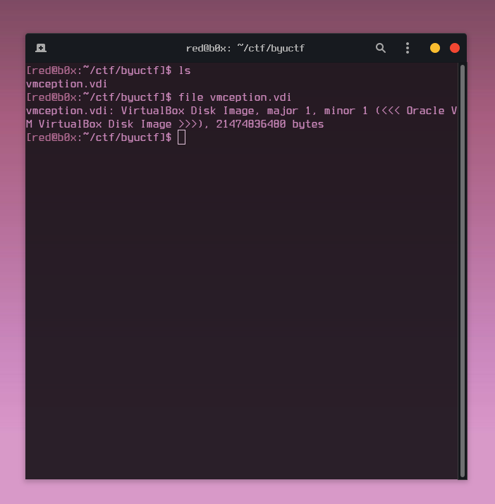
Once we got the file on our machine, lets see what type of file .vdi is, and to no surprise its a virtual hard disk of a Virtual Machine. We can simply open it with VirtualBox or VMware. So that was my next step. For this part we can just sign in with the credentials that were given in the challenge description. cosmo:password
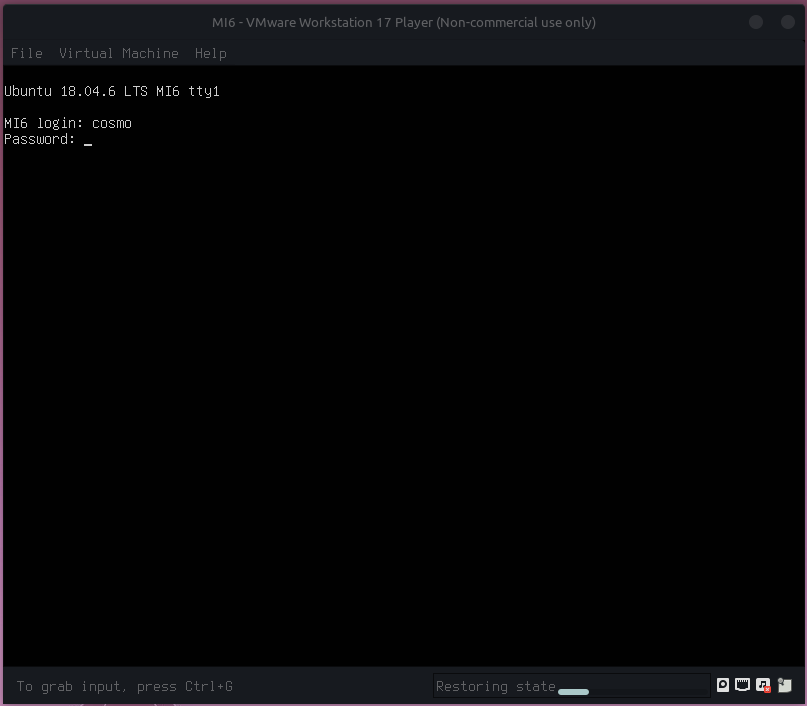
Once I was logged in, I started looking for the flag in different spaces, whether it was checking mounted file systems, crontabs, configuration files, using find find / -name "*.txt" -type f -exec cat {} \; 2> /dev/null | grep "byuctf{". None of it worked and I started getting frustrated. At this point I had an interesting idea to convert a virtual disk to a raw disk image so I have a chance to see what really was happening on this machine.
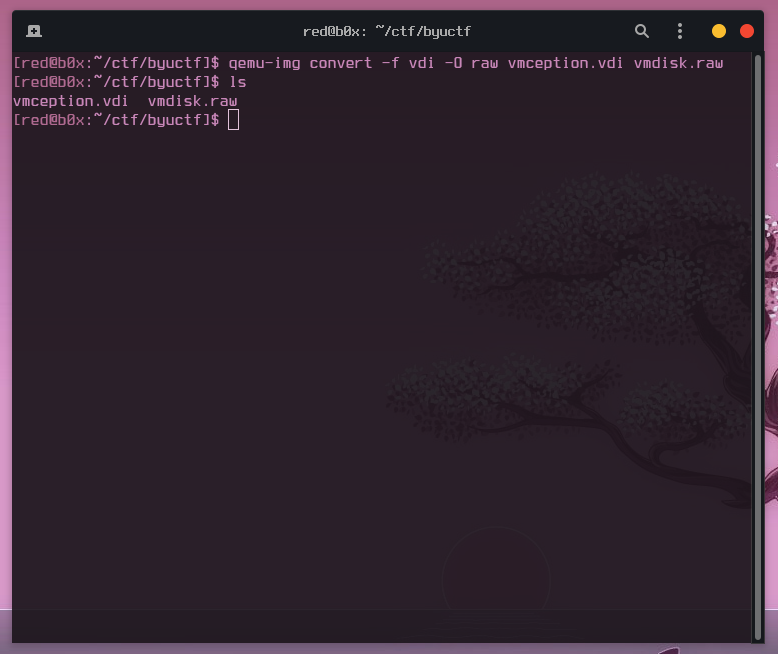
qemu-img convert -f vdi -O raw vmception.vdi vmdisk.raw
Before I decided to jump any further, I needed to see if the raw disk is valid and worth my time. That can be done with mmls.
[red@b0x:~/ctf/byuctf]$ mmls vmdisk.raw
DOS Partition Table
Offset Sector: 0
Units are in 512-byte sectors
Slot Start End Length Description
000: Meta 0000000000 0000000000 0000000001 Primary Table (#0)
001: ------- 0000000000 0000002047 0000002048 Unallocated
002: 000:000 0000002048 0039942143 0039940096 Linux (0x83)
003: ------- 0039942144 0039944191 0000002048 Unallocated
004: Meta 0039944190 0041940991 0001996802 DOS Extended (0x05)
005: Meta 0039944190 0039944190 0000000001 Extended Table (#1)
006: 001:000 0039944192 0041940991 0001996800 Linux Swap / Solaris x86 (0x82)
007: ------- 0041940992 0041943039 0000002048 Unallocated
Time to start AUTOPSY and mount the disk for further analysis. Once that was done, I once again looked through the file system for sensitive files, and there it was I found something that helped me understand this challenge even more.
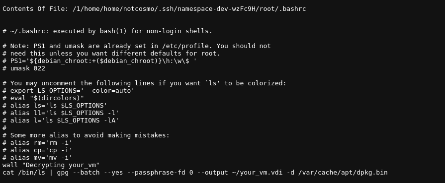
/home/notcosmo/.ssh/namespace-dev-wzFc9H/root/.bashrc
Specifically it was this command that I instantly took note of.
cat /bin/ls | gpg --batch --yes
--passphrase-fd 0 --output ~/your_vm.vdi -d /var/cache/apt/dpkg.bin
It was now time to tear down this command part by part to see what it was doing. We first read the contents of /bin/ls then pipe | into a different command, which in our case is gpg --batch --yes --passphrase-fd 0 --output ~/your_vm.vdi -d /var/cache/apt/dpkg.bin. In simpler words the contents, of ls are being used to decrypt the dpkg.bin file which are then outputted to your_vm.vdi. So lets export the .bin file and try to decrypt it.
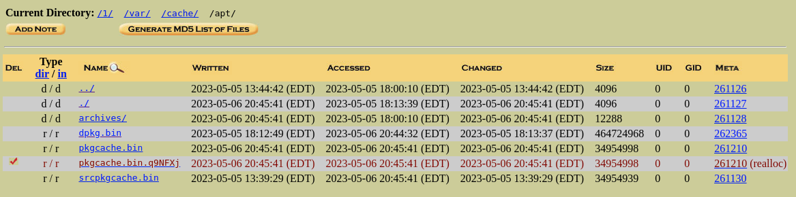
Just wanna add a little note here, that deleted file had some really funny text
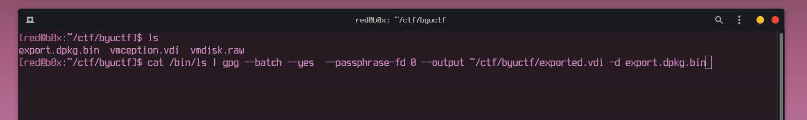
After the .bin file was exported I decided to run the same command that was found in .bashrc file earlier to see if I can decrypt another virtual disk. Ill tell you right now, it worked, but if did not, we could of pulled out the ls binary from the original disk and ran it with that ls instead of the one thats on my machine. Just incase the binaries differed.
exported.vdi
Since everything was going fine the way I was doing it. My initial thought was to replicate the same process I just did with the first virtual hard disk. I ran the same qemu command to convert the vdi to a raw disk format.
qemu-imqemu-img convert -f vdi -O raw exported.vdi another.raw
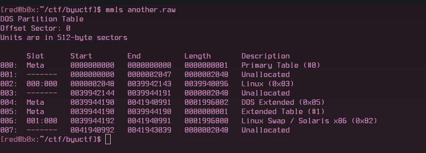
Okay this was really looking promising, I decided to stick with manual disk analysis instead of using Autopsy again. So let’s grab the start offset of the Linux (0x83) partition.
fls -o 2048 another.raw
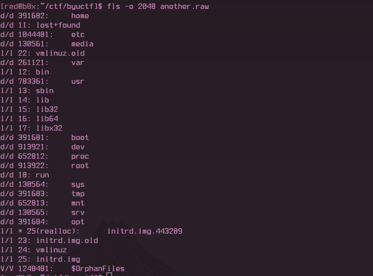
fls -o 2048 another.raw 913922
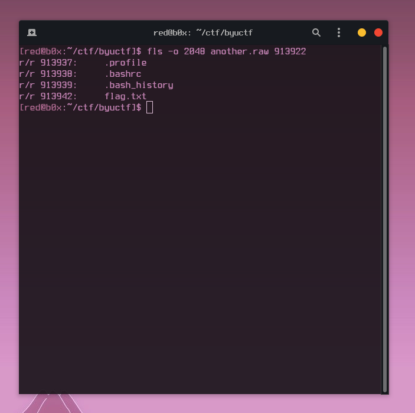
When I seen this, got pretty excited not even gonna lie. Now let’s grab that flag.txt
icat -o 2048 another.raw 913942 > flag.txt
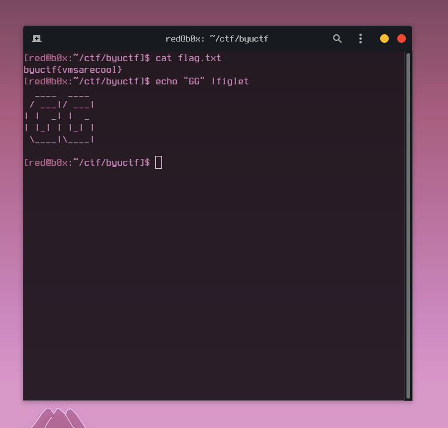
FLAG: byuctf{vmsarecool}
WHOA! That was a challenge , which I really enjoyed. Real shoutout to the challenge dev Echo8358#9560.
STOKED TO COME 5TH WITH THE BOYS
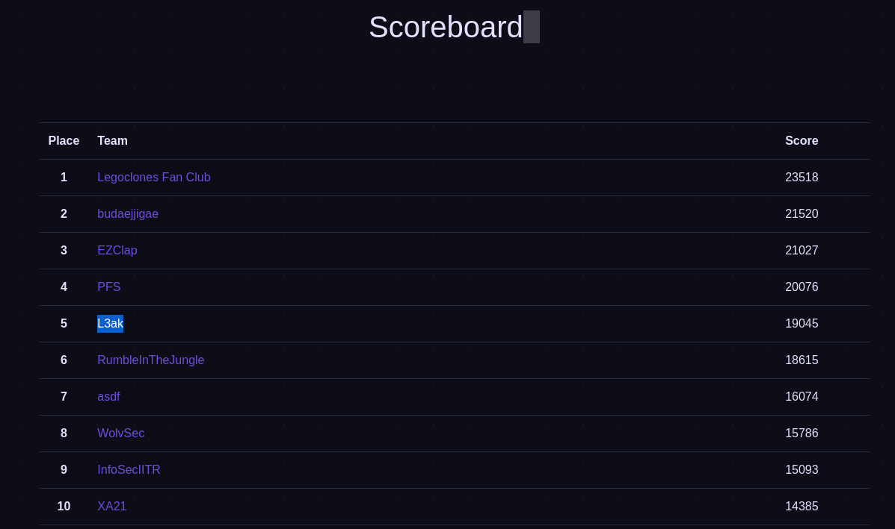